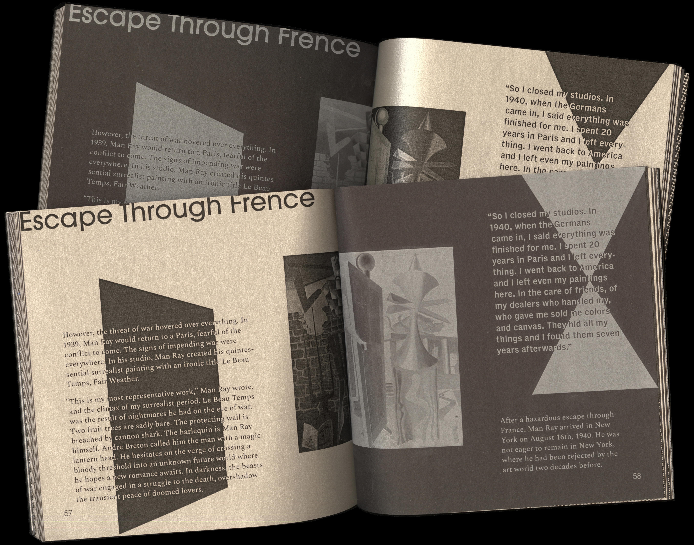
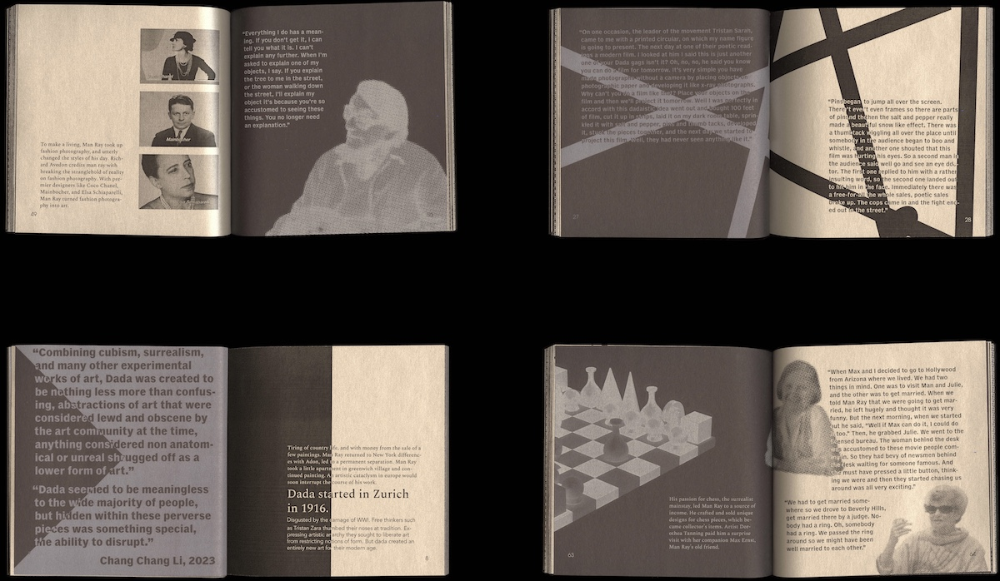
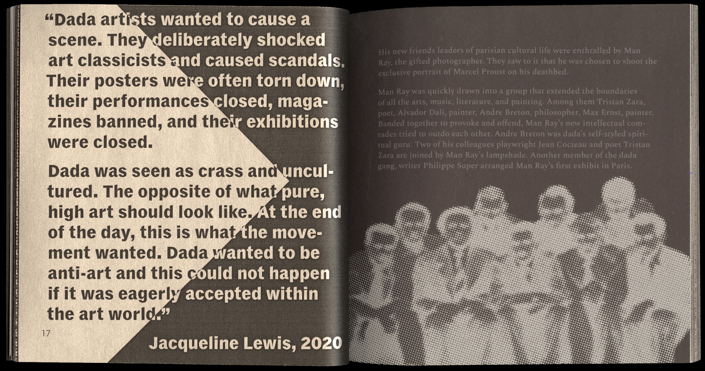
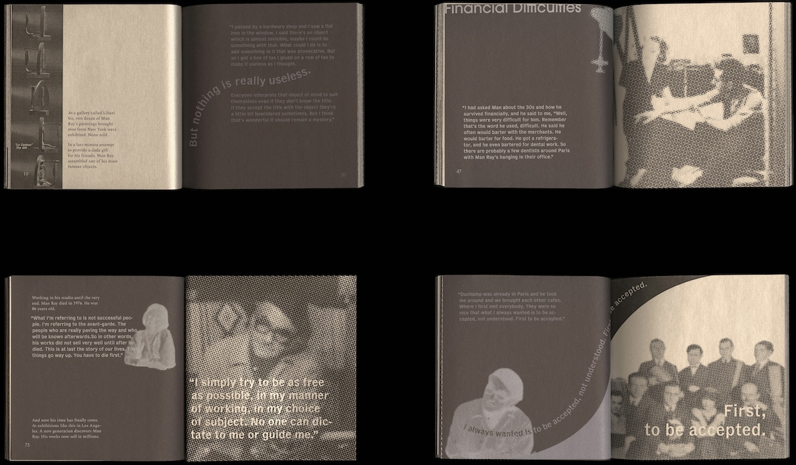

A Documentary Book Design of Man Ray, a film photographer, an object maker, and a painter. The contents of the book were the transcription of the documentary film from The National Endowment for the Arts, and The Corporation for Public Broadcasting. The book expresses Man Ray’s life, difficulties and his persistence involved in Dada, Surrealist, and Avant-Garde movements. The material choice with inverse effect of black and silver profound influence of film photography on Man Ray's life and the evolution of his artworks.




